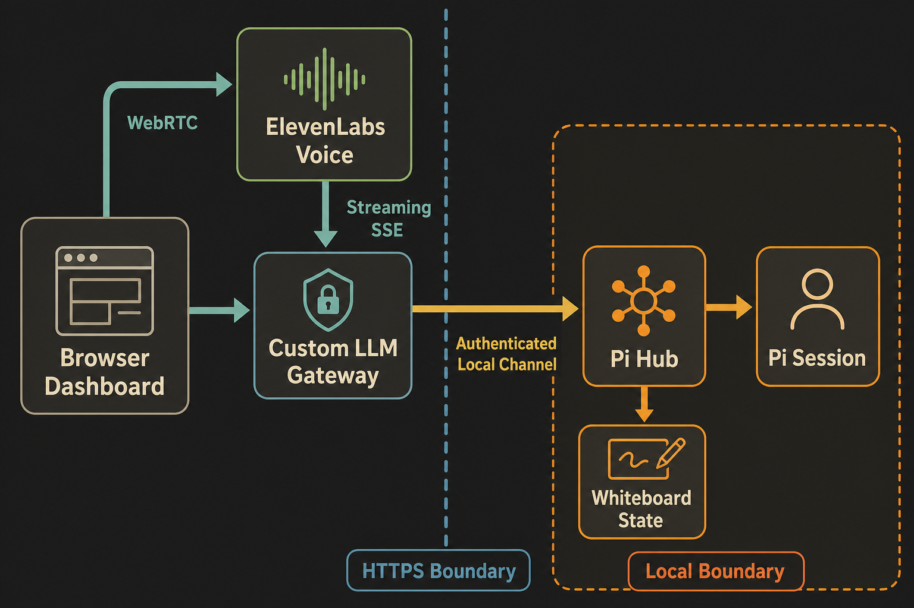
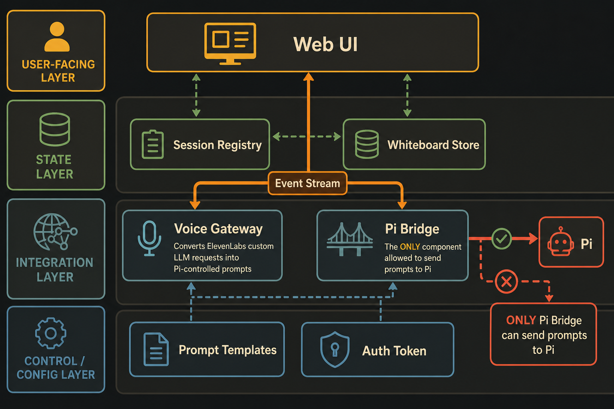
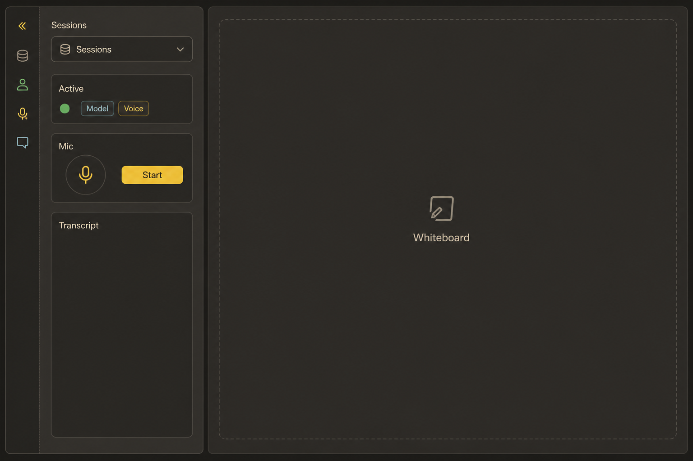
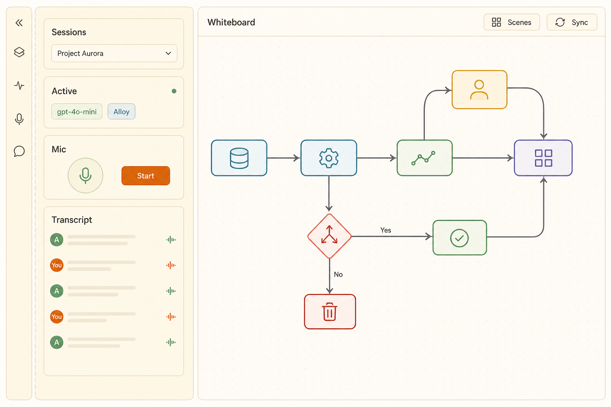
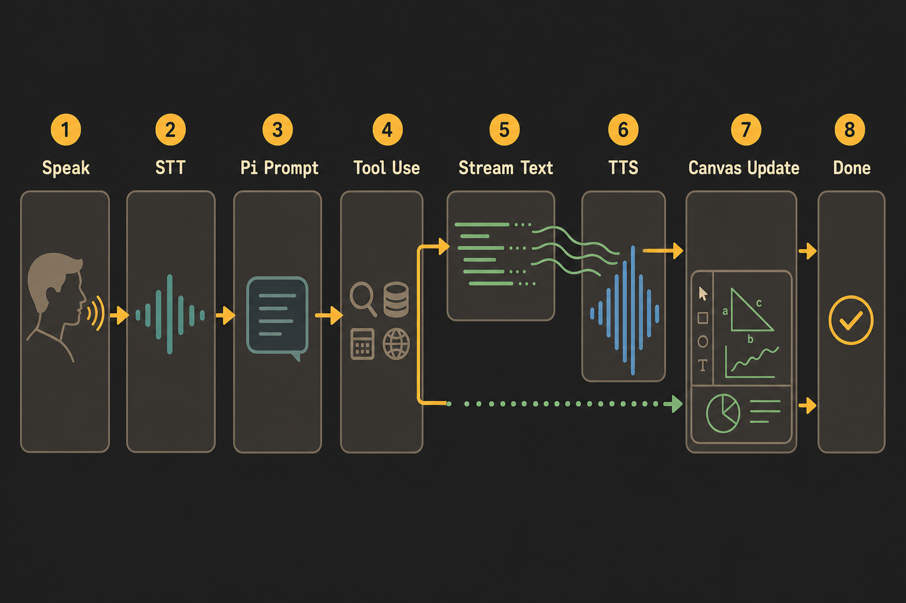
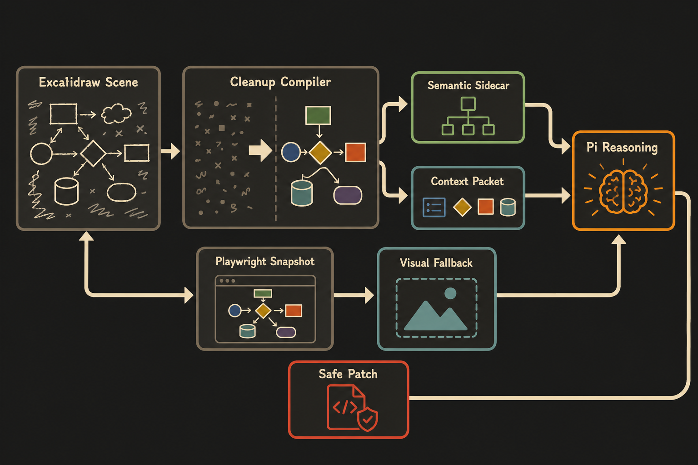
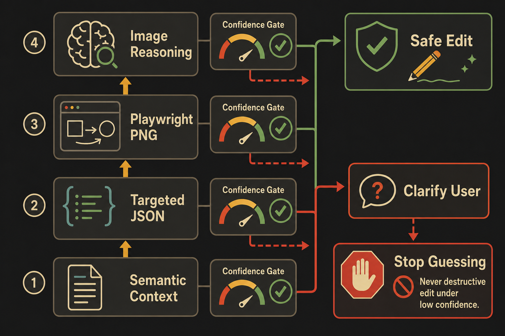

Architecture · Voice-first Pi whiteboard
Pi × ElevenLabs Voice Whiteboard Dashboard
A Pi-native React dashboard where ElevenLabs Conversational AI handles microphone, turn detection, speech-to-text, and text-to-speech while Pi remains the only reasoning engine, codebase actor, prompt owner, and whiteboard decision maker.
System Context

The core design is not “embed a voice chatbot beside Pi.” The design is “make ElevenLabs call Pi as its Custom LLM.” That keeps the voice layer useful while preventing ElevenLabs from becoming the planner, coder, or explainer.
Architecture Drivers
Control
Prompts, model selection, tool policy, and whiteboard mechanics live in Pi extension files and Pi session state, not in ElevenLabs agent behavior.
Real-time feel
Use WebRTC for browser voice, OpenAI-compatible SSE for streamed Pi text back to ElevenLabs, and WebSocket for dashboard updates.
Minimal UI
Use shadcn/ui cards, buttons, tabs, badges, and command-list patterns. Use Excalidraw only for the canvas/editor surface.
Session safety
Every voice turn targets one explicit Pi session. Per-session locks prevent voice and TUI input from conflicting.
No PAI dependency
The PAI daemon remains separate. This system uses ElevenLabs ConvAI directly and does not call PAI Pulse voice routes.
Explainable diagrams
Generated UX and architecture visuals establish the mental model; inline tables and flows define the implementation contract.
Component Model

| Component | Responsibility | Technology | Owns |
|---|---|---|---|
| Dashboard Web UI | Collapsible left pane with Sessions dropdown, compact Active status, Mic controls, and Transcript; right pane reserved for whiteboard. | React, Vite, shadcn/ui, Tailwind, Excalidraw. | Client UI state only. |
| Session Registry | Tracks live and persisted Pi sessions exposed to dashboard. | Pi extension state or SDK helper. | Session metadata, selection, liveness. |
| Voice Gateway | OpenAI-compatible endpoint for ElevenLabs Custom LLM. | Bun/Node HTTP server, SSE. | Streaming response adapter, auth, turn routing. |
| Pi Bridge | Submits prompts to selected Pi session and streams Pi events. | Pi extension events; SDK/RPC fallback. | Prompt injection, event fan-out, session lock. |
| Whiteboard Store | Stores Excalidraw scene JSON, semantic index, sanitized LLM context packets, and Playwright-rendered snapshots. | .excalidraw scene JSON + sidecar metadata in Pi custom entries or local files. | Visual scene, semantic graph, cleanup rules, revision history. |
| Prompt Templates | Control voice prompt, whiteboard generation, update rules. | Pi prompt/template files bundled in extension. | Behavior contract and prompt governance. |
UX Direction: Left Pane Controls, Right Pane Whiteboard
The frontend should feel like a focused developer instrument, not an observability wall. All conversation controls belong in one collapsible left pane so the right side can become the whiteboard workspace. The left pane has exactly four functional blocks: Sessions, Active, Mic, and Transcript.
The mic icon and Start button are part of the Mic block. Active is intentionally small: model and voice badges belong there, but they should not compete with the transcript or canvas.


Expanded left pane contract
- Sessions: dropdown selector, not a long permanent list.
- Active: compact model + voice badges and connection state.
- Mic: mic icon, Start/Stop, mute, and level meter.
- Transcript: scrollable user/assistant voice transcript.
Collapsed left pane contract
Collapsed mode shows only four icons in the same order: Sessions, Active, Mic, Transcript. Hover or click expands the pane. The whiteboard width grows immediately; no transcript content remains on the canvas side.
Component library
Use shadcn/ui for Select, Card, Badge, Button, ScrollArea, Sheet, Separator, Tooltip, and Toggle. The left pane can be a resizable/collapsible sidebar component.
Canvas library
Use Excalidraw for the right-side canvas. Scene, Sync, Render, and Cleanup live in a minimal top toolbar; transcript and mic never occupy right-side space.
Theme
Support dark and light Gruvbox. Keep semantic tokens identical so collapsed/expanded states and canvas controls remain consistent across themes.
Key Real-time Flow

WebRTC
voice only
SSE adapter
reason + tools
POST /v1/chat/completions # ElevenLabs Custom LLM calls this
→ extract latest user transcript
→ resolve selected Pi session
→ render Pi voice prompt template
→ pi.sendUserMessage(...) or SDK session.prompt(...)
→ stream message_update text_delta as SSE
→ emit whiteboard tool updates over dashboard WebSocketData Model & Ownership
| Data | Owner | Persistence | Notes |
|---|---|---|---|
| Pi messages | Pi Session | Pi session JSONL | Source of truth for reasoning history. |
| Voice transcript | Dashboard Hub | Session-scoped JSON/custom entries | Mirror of user/assistant voice turns for UI and debugging. |
| Whiteboard scenes | Whiteboard Store | Session custom entries, .pi/whiteboards/, and exportable .excalidraw files | Excalidraw elements/files/appState plus semantic sidecar, cleanup checksum, snapshot hash, and revision ID. |
| Prompt templates | Extension package | Files under extension/prompts | Versioned behavior contract. |
| ElevenLabs token | Voice Gateway | Ephemeral | Never expose API key to browser. |
Excalidraw → Pi/LLM Understanding Contract
Excalidraw is the right visual editor, but Pi must never reason over a noisy raw .excalidraw file alone. Every voice turn builds a compact Whiteboard Context Packet from the scene, the semantic sidecar, recent canvas events, selected elements, and—when needed—a Playwright-rendered image snapshot.


1. Preserve visual truth
Persist normal Excalidraw scene JSON: elements, appState, and files. Use serializeAsJSON, loadFromBlob, onChange, and updateScene so exported files stay portable.
2. Add semantic anchors
Store customData.semanticId, semanticType, ownership, tags, and source references on elements. Keep a sidecar graph that maps shapes and arrows to brainstorm concepts.
3. Compile LLM context
Before each Pi turn, compile selected elements, text labels, bound arrows, viewport, recent events, and a compact scene summary. Never send base64 files or full style noise by default.
Whiteboard Context Packet
{
"revisionId": "wb_42",
"selected": ["svc.piHub"],
"viewport": { "x": 0, "y": 0, "zoom": 0.8 },
"nodes": [
{
"id": "svc.piHub",
"elementIds": ["el_pi_hub_rect", "el_pi_hub_label"],
"kind": "service",
"title": "Pi Hub",
"summary": "Owns prompts, tools, sessions, and whiteboard decisions"
}
],
"edges": [
{
"from": "voice.elevenlabs",
"to": "svc.piHub",
"arrowElementId": "el_custom_llm_arrow",
"label": "Custom LLM HTTPS SSE",
"kind": "voice"
}
],
"recentEvents": ["user selected Pi Hub", "user asked for Excalidraw integration"],
"snapshot": { "available": true, "path": "snapshots/wb_42.png", "reason": "layout_or_ambiguous_scene" }
}Noise source in .excalidraw | Cleanup action | Kept for Pi? |
|---|---|---|
| Deleted elements, stale collaborator state, transient UI state | Drop unless debugging revision history. | No |
| Style defaults, seeds, version nonces, roughness, opacity | Collapse to semantic style only when it conveys meaning. | Usually no |
Large files[*].dataURL image payloads | Replace with MIME type, hash, dimensions, filename, and optional rendered snapshot path. | No base64 |
| Freehand strokes and decorative arrows | Summarize as annotations unless selected or connected to semantic elements. | Only summary |
| Text elements and bound arrows | Normalize into nodes, labels, and edges with stable semantic IDs. | Yes |
| Frames, groups, selected element IDs, viewport | Keep as context boundaries and user focus. | Yes |
Fallback ladder for “can Pi understand this canvas?”
- Semantic packet first: use sidecar graph + cleaned Excalidraw elements for normal brainstorming.
- Targeted raw JSON: include only selected/nearby elements when exact geometry, bindings, or text is relevant.
- Playwright snapshot: render the Excalidraw canvas in-browser and capture a PNG when layout, overlap, handwriting, or visual gestalt matters.
- Image reasoning fallback: send the PNG snapshot to the vision-capable model with a strict prompt: identify visible objects, ambiguities, and proposed safe edits.
- User clarification: if semantic target and visual target disagree, ask before editing. No silent destructive update.
Pi whiteboard tool contract
whiteboard_get_context({ includeSnapshot?: boolean, scope?: "selected" | "viewport" | "all" })
whiteboard_apply_excalidraw_patch({ baseRevisionId, operations, rationale })
whiteboard_cleanup_scene({ baseRevisionId, preserveExports: true })
whiteboard_render_snapshot({ scope: "selected" | "viewport" | "all", reason })
whiteboard_add_shape({ kind, title, summary, x?, y? })
whiteboard_add_arrow({ fromSemanticId, toSemanticId, label, kind })
whiteboard_explain_selection()Each mutating tool returns a validated patch, a human-readable summary for the transcript, and a new revision ID. The dashboard applies patches with Excalidraw updateScene; the store then recomputes the semantic sidecar and cleanup checksum.
Implementation Plan
- Transport spike. Build Pi extension + dashboard hub. List active sessions, open dashboard, stream Pi
message_updateevents to browser. - Excalidraw whiteboard spike. Embed
@excalidraw/excalidrawin the right pane. WireinitialData,onChange,excalidrawAPI,updateScene, export/import, and revision persistence. - Whiteboard cleanup compiler. Convert noisy
.excalidrawscenes into semantic sidecar + compact Whiteboard Context Packet. Strip base64 files, deleted elements, style defaults, and transient app state. - Playwright visual fallback. Add
whiteboard_render_snapshotusing Pi's Playwright tool path. Capture selected/viewport/all screenshots for visual reasoning, layout critique, and ambiguity resolution. - Custom LLM gateway. Add
/v1/chat/completionsSSE endpoint. Configure ElevenLabs agent to use Custom LLM and voice IDpq3wL6Xv3fuEM14W6ZCg. - Voice session UI. Build the collapsible left pane: Sessions dropdown, compact Active status, Mic block with mic icon + Start/Stop/Mute, and scrollable Transcript.
- Pi whiteboard tools. Register
whiteboard_get_context,whiteboard_apply_excalidraw_patch,whiteboard_cleanup_scene,whiteboard_render_snapshot,whiteboard_add_shape, andwhiteboard_add_arrow. - Hardening. Add auth token, session locks, public tunnel allowlist, truncation, logging, patch validation, confidence thresholds, and abort/interruption handling.
Decision Records
| Decision | Chosen | Why | Rejected |
|---|---|---|---|
| Voice integration | ElevenLabs ConvAI Custom LLM | ElevenLabs handles voice; Pi provides streamed answer. | Normal ConvAI client-tool delegation, because ElevenLabs would still decide too much. |
| Realtime protocol | WebRTC + SSE + WebSocket | Matches browser voice, Custom LLM streaming, and dashboard live updates. | gRPC, because Pi has no documented gRPC surface and browser gRPC adds proxy complexity. |
| Frontend stack | React + shadcn/ui + Excalidraw | Minimal, accessible component primitives plus a mature portable whiteboard editor. | Heavy bespoke design system, React Flow as primary canvas. |
| Whiteboard substrate | Excalidraw scene JSON + semantic sidecar | Excalidraw handles editing/export; sidecar and cleanup compiler make the scene reliable for LLM reasoning. | Raw Excalidraw-only prompts, because visual JSON is too noisy and weakly semantic. |
| Voice ID | pq3wL6Xv3fuEM14W6ZCg | User preference; can be default or runtime TTS override. | Using PAI daemon voice route. |
Quality Attributes
Latency
Stream buffer words early when Pi needs tool time. Prefer concise spoken responses.
Security
Public gateway requires bearer auth and never exposes ElevenLabs or Pi credentials to the browser.
Operability
Each turn records transcript, target session, prompt template version, whiteboard revision, and stream status.
Prompt control
All behavior prompts live in Pi extension files. ElevenLabs agent prompt stays minimal and non-authoritative.
Accessibility
Voice is optional. Every voice event appears as transcript text. Whiteboard changes are summarized textually.
Theme clarity
Gruvbox dark for dashboard focus; Gruvbox light for diagram legibility. Both use identical semantic tokens.
Risks & Mitigations
Deployment & Operations
- Local hub: bind dashboard hub to
127.0.0.1by default. - Public gateway: expose only the Custom LLM endpoint through Cloudflare Tunnel, ngrok, or a small VPS reverse proxy.
- ElevenLabs setup: configure agent Custom LLM endpoint; enable TTS Voice ID override if using runtime voice override; otherwise set default voice to
pq3wL6Xv3fuEM14W6ZCg. - Logging: record turn ID, Pi session ID, ElevenLabs conversation ID, whiteboard revision ID, stream start/end, and errors.
Assumptions & Open Questions
Assumption
The first implementation can use a public tunnel for the Custom LLM endpoint during development.
Assumption
The target ElevenLabs plan supports ConvAI Custom LLM and the selected voice ID.
Open
Should dashboard-created sessions use the Pi SDK directly, or should every session be a normal Pi TUI session registered by an extension?
Open
Should Excalidraw scene JSON, semantic sidecar, snapshots, and cleanup metadata be stored in Pi session custom entries, project .pi/whiteboards/, or both?
Open
Which tunnel/auth strategy should be standard for the Custom LLM endpoint?
Open
Should the voice session interrupt Pi on user speech, or queue steering messages until the current turn reaches a safe point?